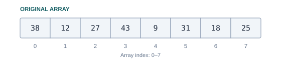
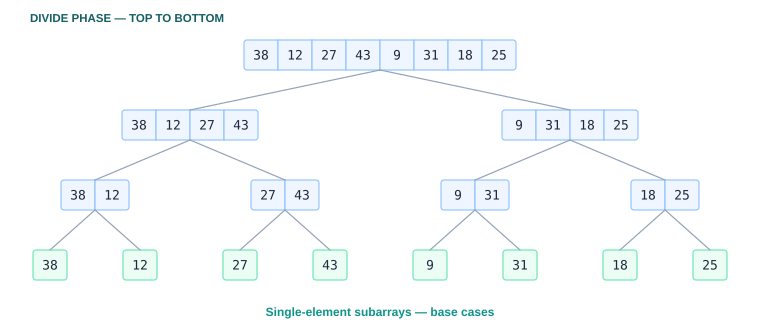
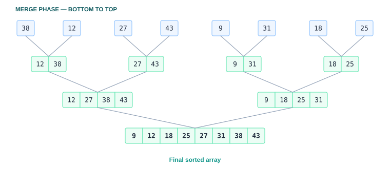
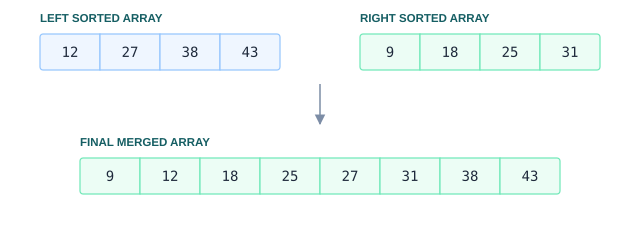
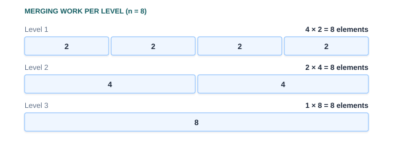
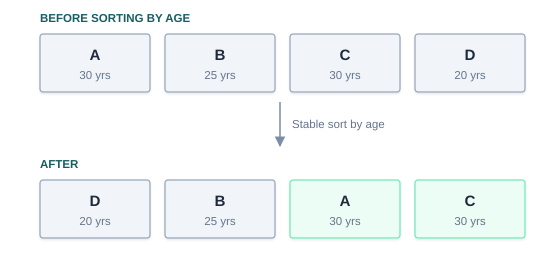
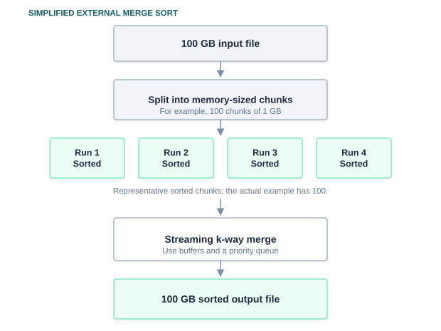

Merge Sort is a comparison-based sorting algorithm that uses the Divide and Conquer technique to sort an array or collection of elements.
It is one of the most important sorting algorithms because it guarantees O(n log n) time complexity in the best, average, and worst cases.
In this guide, we'll cover how Merge Sort works internally, step-by-step execution, recursive and iterative Java implementations, memory usage, stability, complexity analysis, and practical applications.
Merge Sort works by repeatedly dividing an array into smaller subarrays until each subarray contains a single element, then merging those subarrays back together in sorted order.
The algorithm has three fundamental operations:
Key characteristics
| Property | Merge Sort |
|---|---|
| Algorithm paradigm | Divide and Conquer |
| Best-case time | O(n log n) |
| Average-case time | O(n log n) |
| Worst-case time | O(n log n) |
| Auxiliary space (array) | O(n) |
| Stable | Yes, with stable merging |
| In-place | No, in the standard array implementation |
| Recursive | Typically yes |
| Comparison-based | Yes |
| Suitable for linked lists | Yes |
Consider the following unsorted array:

Our objective is to sort it in ascending order.
Step 1: Divide the array
First, divide the array into two halves. Continue dividing until every subarray contains just one element.

Once a subarray contains one element, recursion stops because a single element is already sorted.
Notice that the divide operation does not sort anything. It only splits the problem into smaller ones.
Step 2: Merge sorted subarrays
Now we begin merging the smallest subarrays in sorted order.

The full merge sequence is:
| Merge operation | Sorted result |
|---|---|
[38] + [12] | [12, 38] |
[27] + [43] | [27, 43] |
[9] + [31] | [9, 31] |
[18] + [25] | [18, 25] |
[12, 38] + [27, 43] | [12, 27, 38, 43] |
[9, 31] + [18, 25] | [9, 18, 25, 31] |
| Merge both sorted halves | [9, 12, 18, 25, 27, 31, 38, 43] |
Interactive Merge Sort visualization
Use the controls to follow each split, comparison, and merge, including how elements are selected from the two sorted halves.
The most important operation in Merge Sort is merge().
It takes two already sorted subarrays and combines them into a single sorted subarray.
For example:

How do we merge?
Maintain three pointers:
i — points to the current element of the left subarray.
j — points to the current element of the right subarray.
k — points to the next position in the merged output.
At each step, compare left[i] and right[j]. Copy the smaller element into the output, then advance its pointer and k.
Here is an interactive demonstration of that operation:
The critical insight is that we never need to compare every element of the left half with every element of the right half.
Because both are already sorted, comparing their front elements is sufficient to select the next smallest value.
Therefore, merging subarrays of sizes m and n takes O(m + n) time, not O(m × n).
Merge Sort consists of two main functions: mergeSort() and merge().
mergeSort()
MERGE_SORT(array, left, right):
if left >= right:
return
mid = left + (right - left) / 2
MERGE_SORT(array, left, mid)
MERGE_SORT(array, mid + 1, right)
MERGE(array, left, mid, right)The two recursive calls sort the left and right halves independently. The MERGE() operation executes only after both halves have been sorted.
merge()
MERGE(array, left, mid, right):
i = left
j = mid + 1
k = left
while i <= mid AND j <= right:
if array[i] <= array[j]:
temp[k] = array[i]
i++
else:
temp[k] = array[j]
j++
k++
while i <= mid:
temp[k] = array[i]
i++
k++
while j <= right:
temp[k] = array[j]
j++
k++
copy temp[left...right] back to arrayThis uses an auxiliary array temp, allocated once before sorting.
The <= comparison is especially important: it makes the algorithm stable by choosing the left element first when two values are equal.
The following is a production-style basic implementation with a reusable temporary array.
public void sort(int[] arr) {
Objects.requireNonNull(arr, "Array cannot be null");
if (arr.length < 2)
return;
// Allocate temporary memory only once.
var temp = new int[arr.length];
mergeSort(arr, temp, 0, arr.length - 1);
}
private void mergeSort(int[] arr, int[] temp, int left, int right) {
// Base case: zero or one element.
if (left >= right)
return;
// Avoid integer overflow.
int mid = left + (right - left) / 2;
// Sort the left half.
mergeSort(arr, temp, left, mid);
// Sort the right half.
mergeSort(arr, temp, mid + 1, right);
// Merge the two sorted halves.
merge(arr, temp, left, mid, right);
}
private void merge(int[] arr, int[] temp, int left, int mid, int right) {
int i = left; // Left-half pointer
int j = mid + 1; // Right-half pointer
int k = left; // Temporary-array pointer
// Compare the front elements.
while (i <= mid && j <= right)
if (arr[i] <= arr[j])
temp[k++] = arr[i++];
else
temp[k++] = arr[j++];
// Copy remaining left elements.
while (i <= mid)
temp[k++] = arr[i++];
// Copy remaining right elements.
while (j <= right)
temp[k++] = arr[j++];
// Copy merged result back to original array.
System.arraycopy(temp, left, arr, left, right - left + 1);
}
public void main() {
int[] arr = {38, 12, 27, 43, 9, 31, 18, 25};
Console.draw("Before: {arr}");
sort(arr);
Console.draw("After : {arr}");
}Output:
Before: [38, 12, 27, 43, 9, 31, 18, 25]
After : [9, 12, 18, 25, 27, 31, 38, 43]Understanding the important lines
1. Finding the midpoint
int mid = left + (right - left) / 2;This finds the middle index of the current subarray. It is safer than (left + right) / 2 because adding two large positive indices can overflow an integer.
For an array indexed from 0 through 7, mid = 3, producing the two ranges [0,3] and [4,7].
2. Recursive calls
mergeSort(arr, temp, left, mid);
mergeSort(arr, temp, mid + 1, right);Both halves are sorted before the current invocation merges them. Every recursive invocation is responsible for its own range.
3. Choosing the smaller element
if (arr[i] <= arr[j])
temp[k++] = arr[i++];
else
temp[k++] = arr[j++];The condition decides which element belongs at the next output position. The increment operators advance the input pointer that was used and the output pointer.
4. Copying remaining elements
while (i <= mid)
temp[k++] = arr[i++];Once one half is exhausted, the remaining half can be copied without comparisons because it is already sorted.
5. Copying the merged result back
System.arraycopy(temp, left, arr, left, right - left + 1);The merged elements exist in the temporary array. We copy only the current range back into the original array so the parent recursive call can use the sorted result.
An important distinction is that recursion goes down the left branch first in this implementation. It does not immediately merge after dividing the root array.
Consider a small example:
mergeSort([8, 3, 5, 1])
│
├── mergeSort([8, 3])
│ │
│ ├── mergeSort([8]) → return
│ │
│ ├── mergeSort([3]) → return
│ │
│ └── merge([8], [3])
│ Result: [3, 8]
│
├── mergeSort([5, 1])
│ │
│ ├── mergeSort([5]) → return
│ │
│ ├── mergeSort([1]) → return
│ │
│ └── merge([5], [1])
│ Result: [1, 5]
│
└── merge([3, 8], [1, 5])
Result: [1, 3, 5, 8]What exactly happens in memory?
Each mergeSort() call creates a stack frame containing its own local variables such as left, right, and mid.
When the base case is reached, the function returns to its parent. That parent then continues executing the next statement.
A parent call can only finish its merge after both child calls have returned.
The recursion depth is approximately \lceil\log_2 n\rceil+1 stack frames, including the root and base case.
For example, an array of 1,024 elements requires a maximum of 11 simultaneous mergeSort() frames. It does not require 1,024 simultaneous frames.
Merge Sort's time complexity can be understood by analyzing the dividing and merging work separately.
How many levels of division exist?
At every level, the input size is approximately halved.
| Level | Subarrays | Elements per subarray |
|---|---|---|
| 0 | 1 | n |
| 1 | 2 | n/2 |
| 2 | 4 | n/4 |
| 3 | 8 | n/8 |
| k | 2ᵏ | n/2ᵏ |
We stop dividing when a subarray contains one element:
\frac{n}{2^k}=1
Therefore:
2^k=n
Taking logarithms:
\boxed{k=\log_2 n}
So the number of division levels is O(log n).
How much work happens at each merge level?
The important observation is that the total number of elements processed at each full merge level remains n.

Every level processes all 8 elements, distributed across progressively larger merged runs.
Each merge level takes O(n) time. There are O(log n) merge levels.
Therefore:
\boxed{T(n)=O(n\log n)}
Recurrence relation
For a recursive algorithm, the running time is expressed as:
T(n)=2T(n/2)+O(n)
Here, 2T(n/2) represents sorting two halves, and O(n) represents merging them.
Using the Master Theorem:
a=2,\quad b=2,\quad f(n)=\Theta(n)
Since n^{\log_b a}=n^{\log_2 2}=n, the merge work matches the polynomial work of the recursive subproblems.
Therefore:
\boxed{T(n)=\Theta(n\log n)}
The bound is tight: both the upper and lower asymptotic bounds are n log n for the standard implementation.
Best, average, and worst cases
| Case | Input example | Time |
|---|---|---|
| Best | Already sorted | Θ(n log n) |
| Average | Random order | Θ(n log n) |
| Worst | An arrangement requiring many comparisons | Θ(n log n) |
Why does the best case still require n log n time?
Because the standard Merge Sort algorithm performs the same recursive decomposition and merges the same ranges regardless of whether the input is already sorted.
An optimization that skips merging when adjacent sorted runs are already in order can improve this behavior, which we'll examine later.
Number of comparisons
Merging sorted subarrays of lengths m and n requires at most:
m+n-1
comparisons.
For an array length that is a power of two, the maximum number of comparisons across the entire standard Merge Sort is:
\boxed{C(n)=n\log_2 n-n+1}
For n = 8:
C(8)=8(3)-8+1=17
Thus, Merge Sort needs at most 17 element comparisons when sorting eight elements. The specific eight-element example above needs 16.
The standard array-based Merge Sort uses two different kinds of extra memory.
Temporary array
var temp = new int[arr.length];A temporary array of size n is allocated to hold merged elements.
Its space requirement is:
S_{\text{temp}}(n)=O(n)
Recursive call stack
Each recursive call adds a stack frame. Because only one branch of the recursion tree is active on the call stack at a time, the maximum stack depth is O(log n).
Thus:
S_{\text{stack}}(n)=O(\log n)
The combined auxiliary space is:
S(n)=O(n)+O(\log n)=\boxed{O(n)}
Example: Sorting one million integers
Assuming Java's usual 4-byte int, the original int[] occupies approximately 4 MB of element storage. The reusable temporary int[] occupies another approximately 4 MB.
The recursion depth is approximately 21 frames. Array object headers, alignment, and stack frames add a small amount of further memory.
One optimization in our implementation is especially important: we allocate temp only once.
If new temporary arrays are allocated inside every merge, the program can generate substantially more short-lived allocations and garbage collection work, even though the peak live auxiliary memory can still be O(n) in a well-structured implementation.
A sorting algorithm is stable if elements having equal sort keys retain their original relative order.
Consider employee records sorted by age.

A and C both have age 30. A appeared before C originally, and remains before C after sorting.
The stability comes from this line:
if (arr[i] <= arr[j])When two values are equal, the element from the left half is chosen first.
This preserves the original order of equal elements, provided recursive merges are also stable.
Changing <= to < causes the implementation to choose the right-half element on equality and can destroy stability.
Stability is useful for multi-key sorting. For example, records can first be sorted by employee name and then stably sorted by department, preserving name order within each department.
So far, we've used the Top-Down Merge Sort, which recursively divides an array.
Merge Sort can also be implemented iteratively, without recursion. This is called Bottom-Up Merge Sort.
Instead of dividing the array first, we start by considering every element a sorted run of length one and repeatedly merge adjacent runs.
How Bottom-Up Merge Sort works
Consider:
Original:
[38, 12, 27, 43, 9, 31, 18, 25]
Width = 1: Merge individual elements
[12, 38] [27, 43] [9, 31] [18, 25]
Width = 2: Merge runs of 2 elements
[12, 27, 38, 43] [9, 18, 25, 31]
Width = 4: Merge runs of 4 elements
[9, 12, 18, 25, 27, 31, 38, 43]
Sorted!Notice that the size of sorted runs doubles after each pass: 1, 2, 4, 8, 16, and so on.
Java implementation
Add the following method to the MergeSort class shown earlier. It reuses the existing merge() method.
public void sortBottomUp(int[] arr) {
Objects.requireNonNull(arr);
int n = arr.length;
if (n < 2)
return;
var temp = new int[n];
// Sorted run width: 1, 2, 4, 8, ...
for (long width = 1; width < n; width *= 2) {
// Merge adjacent runs of this width.
for (long start = 0; start < n; start += 2 * width) {
int left = (int) start;
int mid = (int) Math.min(start + width - 1, n - 1L);
int right = (int) Math.min(start + 2 * width - 1, n - 1L);
if (mid < right)
merge(arr, temp, left, mid, right);
}
}
}Using long for the width and start calculations avoids integer overflow for very large arrays.
Top-Down vs Bottom-Up Merge Sort
| Feature | Top-Down | Bottom-Up |
|---|---|---|
| Implementation | Recursive | Iterative |
| Division | Splits until single elements | Starts with single elements |
| Merge direction | From leaves upward | From small runs upward |
| Time | O(n log n) | O(n log n) |
| Auxiliary array | O(n) | O(n) |
| Call stack | O(log n) | O(1) |
| Recursion overhead | Yes | No |
Both approaches are valid. Bottom-up sorting avoids recursion overhead, while top-down sorting often more closely matches the mathematical definition of Divide and Conquer.
Standard Merge Sort can be improved in several practical ways.
Optimization 1: Skip unnecessary merges
Suppose the left half is:
[1, 3, 5]And the right half is:
[7, 9, 12]Both halves are individually sorted. Moreover, the maximum element of the left half is already less than the minimum element of the right half:
5 <= 7Therefore, the combined range is already sorted. There is no need to call merge().
Modify the recursive implementation:
private void mergeSort(int[] arr, int[] temp, int left, int right) {
if (left >= right)
return;
int mid = left + (right - left) / 2;
mergeSort(arr, temp, left, mid);
mergeSort(arr, temp, mid + 1, right);
// Both halves are sorted.
// No merge is needed when they are already in order.
if (arr[mid] <= arr[mid + 1])
return;
merge(arr, temp, left, mid, right);
}This makes an important difference for already sorted input.
| Input | Standard Merge Sort | Optimized version |
|---|---|---|
| Already sorted | Θ(n log n) | Θ(n) |
| Randomly ordered | Θ(n log n) | O(n log n) |
| Reverse sorted | Θ(n log n) | Θ(n log n) |
For sorted input, recursion still visits O(n) nodes, but the expensive merging work is skipped. This gives linear best-case time.
Optimization 2: Use insertion sort for small subarrays
Recursive Merge Sort has overhead from method calls and merging. Insertion Sort is often faster for very small arrays because of its low overhead and good cache locality.
A hybrid implementation can use insertion sort when a subarray is sufficiently small.
private static final int THRESHOLD = 24;
private void mergeSortHybrid(int[] arr, int[] temp, int left, int right) {
if (right - left + 1 <= THRESHOLD) {
insertionSort(arr, left, right);
return;
}
int mid = left + (right - left) / 2;
mergeSortHybrid(arr, temp, left, mid);
mergeSortHybrid(arr, temp, mid + 1, right);
if (arr[mid] <= arr[mid + 1])
return;
merge(arr, temp, left, mid, right);
}
private void insertionSort(int[] arr, int left, int right) {
for (int i = left + 1; i <= right; i++) {
int value = arr[i];
int j = i - 1;
while (j >= left && arr[j] > value) {
arr[j + 1] = arr[j];
j--;
}
arr[j + 1] = value;
}
}The threshold of 24 is illustrative. The best value depends on the hardware, runtime, data distribution, and element type.
This technique is used in the general family of hybrid sorting algorithms, including ideas found in TimSort.
Merge Sort is particularly well suited for linked lists.
Why? Because it is possible to merge two sorted linked lists by rearranging their next pointers without using an auxiliary array.
Example
Original linked list
8 → 3 → 5 → 1 → null
Divide
8 → 3 5 → 1
↓ ↓
8 3 5 1
Merge
3 → 8 1 → 5
Final merge
1 → 3 → 5 → 8 → nullFor singly linked lists, we can use the slow-and-fast-pointer technique to find the midpoint.
Java implementation
class Node {
int value;
Node next;
Node(int value) {
this.value = value;
}
}
public Node mergeSort(Node head) {
if (head == null || head.next == null)
return head;
// Find the end of the left half.
Node slow = head;
Node fast = head.next;
while (fast != null && fast.next != null) {
slow = slow.next;
fast = fast.next.next;
}
Node rightHead = slow.next;
// Disconnect two halves.
slow.next = null;
Node left = mergeSort(head);
Node right = mergeSort(rightHead);
return merge(left, right);
}
private Node merge(Node left, Node right) {
var dummy = new Node(0);
Node tail = dummy;
while (left != null && right != null) {
if (left.value <= right.value) {
tail.next = left;
left = left.next;
} else {
tail.next = right;
right = right.next;
}
tail = tail.next;
}
// Attach remaining nodes.
tail.next = (left != null) ? left : right;
return dummy.next;
}Complexity for linked lists
| Property | Complexity |
|---|---|
| Time | O(n log n) |
| Auxiliary array | None |
| Recursion stack | O(log n) |
| Peak auxiliary space overall | O(log n) |
| Stability | Yes |
The implementation reuses the original list nodes. The temporary dummy nodes and recursive call stack account for the auxiliary memory.
A bottom-up linked-list Merge Sort can go further and use O(1) auxiliary space, with no recursion.
Real applications rarely sort only primitive integers. We often sort records, domain objects, transaction entries, employees, or other entities using a custom ordering.
We can implement a stable, generic Merge Sort using Java generics and Comparator.
public <T> void sort(T[] arr, Comparator<? super T> comparator) {
T[] temp = arr.clone();
sort(arr, temp, 0, arr.length - 1, comparator);
}
private <T> void sort(T[] arr, T[] temp, int left, int right, Comparator<? super T> comparator) {
if (left >= right)
return;
int mid = left + (right - left) / 2;
sort(arr, temp, left, mid, comparator);
sort(arr, temp, mid + 1, right, comparator);
int i = left;
int j = mid + 1;
int k = left;
while (i <= mid && j <= right)
if (comparator.compare(arr[i], arr[j]) <= 0)
temp[k++] = arr[i++];
else
temp[k++] = arr[j++];
while (i <= mid)
temp[k++] = arr[i++];
while (j <= right)
temp[k++] = arr[j++];
System.arraycopy(temp, left, arr, left, right - left + 1);
}
record Employee(String name, int age) {}
public void main() {
Employee[] employees = {
new Employee("Alice", 30),
new Employee("Bob", 25),
new Employee("Charlie", 30),
new Employee("David", 20)
};
sort(employees, Comparator.comparingInt(Employee::age));
Console.draw("{employees}");
}The output order will be:
Employee[name=David, age=20]
Employee[name=Bob, age=25]
Employee[name=Alice, age=30]
Employee[name=Charlie, age=30]Alice and Charlie have equal ages, but Alice remains before Charlie because our merge operation is stable.
The comparator determines the sort order. For descending age, for example, you could use:
Comparator.comparingInt(Employee::age).reversed()In a normal Java application, prefer library sorting facilities such as Arrays.sort() or List.sort() unless you have a specific reason to implement your own sorting algorithm.
We can formally reason about Merge Sort's correctness using mathematical induction.
Base case: For n = 0 or n = 1, the array is already sorted. The algorithm returns immediately, so it produces the correct result.
Inductive hypothesis: Assume Merge Sort correctly sorts every array containing fewer than n elements.
Inductive step: For an array containing n elements, the algorithm divides it into two smaller subarrays. By the inductive hypothesis, both recursive calls return correctly sorted halves.
The merge operation always selects the smallest remaining front element from those two sorted halves. Therefore, each element appended to the result is at least as large as the preceding element.
Every input element is copied exactly once into the merged result, so no elements are lost or duplicated.
Consequently, the resulting array is correctly sorted and contains exactly the original elements.
By induction, Merge Sort is correct for all nonnegative array lengths.
This proof illustrates a broader idea: Divide and Conquer works when smaller solutions can be combined into a correct solution to the original problem.
These three algorithms all have O(n log n) average-case or better guarantees, but their tradeoffs differ significantly.
| Feature | Merge Sort | Quick Sort | Heap Sort |
|---|---|---|---|
| Best time | O(n log n) | O(n log n) | O(n log n) |
| Average time | O(n log n) | O(n log n) | O(n log n) |
| Worst time | O(n log n) | O(n²) | O(n log n) |
| Typical extra space | O(n) | O(log n) stack | O(1) |
| Stable by default | Yes | No | No |
| Standard strategy | Divide and merge | Partition around pivot | Heap selection |
| Works well on linked lists | Yes | Less naturally | Less naturally |
| Key advantage | Stable, predictable time | Often fast on arrays | Worst-case bound with low extra memory |
Quick Sort's O(log n) auxiliary-space entry assumes a well-engineered implementation that controls stack depth; a naïve recursive version can use O(n) stack space.
When should you choose Merge Sort?
Merge Sort is attractive when stable sorting is required, worst-case O(n log n) time is important, additional memory is acceptable, or data is stored in linked lists or external files.
Quick Sort can be a strong choice for in-memory arrays where its locality and relatively low auxiliary memory are desirable. Heap Sort is useful when strict memory limits and worst-case time guarantees are both important.
External sorting of very large files
Suppose a system needs to sort a 100 GB file, but the available RAM is only 4 GB.
The entire file cannot be loaded into memory.
External Merge Sort solves this by splitting the file into chunks that fit in memory, sorting each chunk, writing sorted runs to disk, and then merging those runs using streaming reads.

Only small portions of the sorted runs need to reside in RAM during merging. This is a major reason that merge-based algorithms are foundational to large-scale data processing.
Database sorting
External merge techniques are useful for sorting datasets larger than available memory. Database query engines may use related sort-and-merge techniques when executing ORDER BY, sort-merge joins, or disk-based processing.
Distributed systems
Merge-based approaches are useful when independently sorted partitions need to be combined into a globally sorted stream.
Parallel sorting
The two halves of Merge Sort can be sorted independently, making the algorithm naturally suitable for parallel computation.
Java also provides Arrays.parallelSort() for parallel sorting, without requiring you to manually manage worker threads.
| Mistake | Problem | Correct approach |
|---|---|---|
| Incorrect base condition | Infinite recursion or unnecessary calls | Stop when left >= right |
| Incorrect midpoint ranges | Missing or repeating elements | Use [left, mid] and [mid+1, right] |
Using < for equal keys | Breaks stability | Use <= when selecting the left element |
| Forgetting remaining elements | Incomplete merged result | Copy both possible remainders |
| Forgetting copy-back | Original array stays unsorted | Copy merged range to original |
| Repeated temporary allocations | More allocation overhead | Reuse a buffer |
Using (left+right)/2 | Possible integer overflow | Use left+(right-left)/2 |
| Calling merge on unsorted halves | Incorrect output | Sort both halves before merging |
Is Merge Sort an in-place algorithm?
Not in its standard array implementation. It generally requires O(n) auxiliary memory, although specialized in-place merging algorithms exist.
Is Merge Sort stable?
Yes, provided that equal values from the left sorted run are selected before equal values from the right run.
Can Merge Sort work without recursion?
Yes. Bottom-up Merge Sort uses loops to merge increasingly large sorted runs and avoids recursive stack usage.
Why is Merge Sort O(n log n) instead of O(n²)?
Because the array is halved recursively, creating O(log n) levels, and merging across each level takes O(n) total work.
Why is Merge Sort good for linked lists?
Because sorted linked lists can be merged simply by rearranging pointers, without copying their elements into an auxiliary array.
Does Merge Sort work with duplicates and negative numbers?
Yes. It works with any values for which a consistent comparison operation is defined.
What is the main disadvantage of Merge Sort?
Its O(n) auxiliary-memory requirement for standard array sorting, along with the memory traffic involved in copying merged elements.
What is the difference between Merge Sort and TimSort?
Merge Sort recursively or iteratively combines sorted halves. TimSort is an adaptive, stable hybrid that exploits already ordered runs and uses techniques including insertion sorting and run merging.
Merge Sort is a classic demonstration of Divide and Conquer.
Its main insight is that merging two sorted arrays is much easier than sorting an arbitrary unsorted array.
Divide → Sort → Merge
Repeatedly halve the problem, then combine sorted results.
The three concepts most worth mastering are the recursive call tree, the two-pointer merge operation, and the recurrence relation T(n)=2T(n/2)+\Theta(n).
Once these are clear, the recursive implementation, bottom-up variation, linked-list version, and external merging techniques all follow the same fundamental idea.